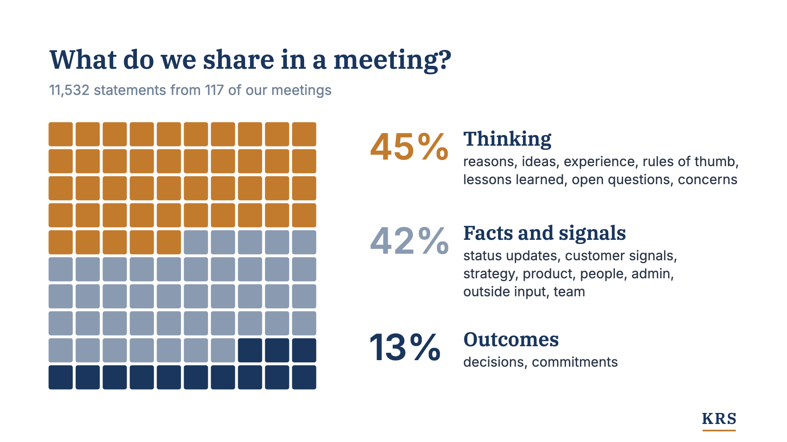
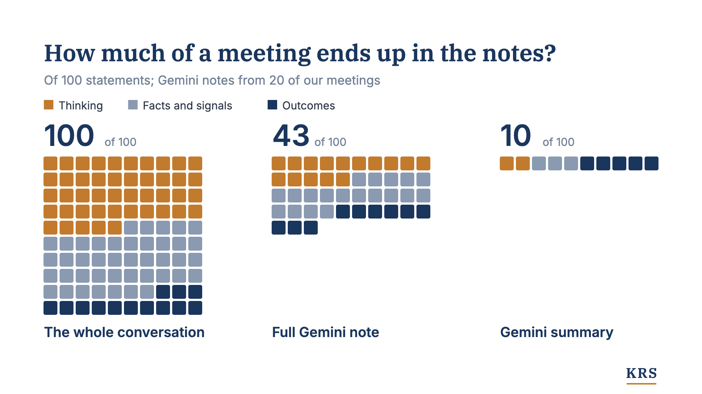
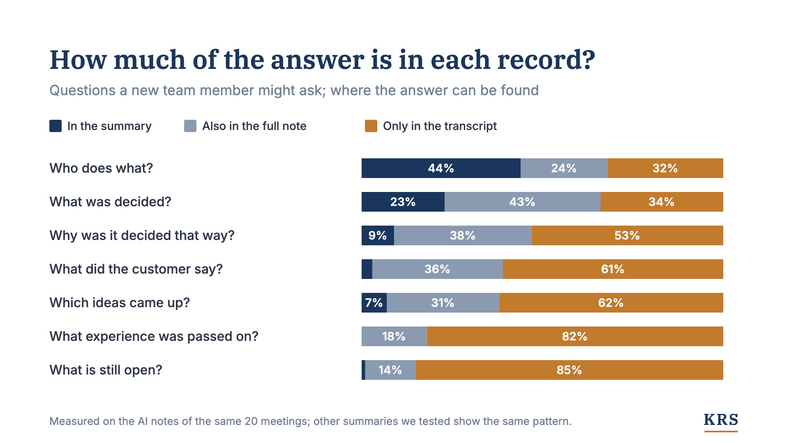

Why We Keep Every Meeting Transcript
Nearly half of what we said in 117 meetings was thinking: reasons, ideas, experience. AI summaries kept almost none of it.

Originally published on LinkedIn.

When an experienced colleague leaves, what goes with them is rarely in any document. The same happens when a project closes: the final report survives, the lessons learned along the way mostly don't. Or when a salesperson learns something new from a customer: a line ends up in the CRM, and the rest gets mentioned once in the weekly team meeting. In each case, the result is kept and the thinking behind it is lost: how people read the situation, what they brought in from past experience, which ideas they considered and dropped. This tacit knowledge lives in people's heads. If it comes out at all, it comes out in conversations and meetings.
I believe meetings are the last big data source that is still largely untapped, and that meeting transcripts, captured properly, are the key to solving the knowledge retention problem many companies face today.
117 meetings, 88 hours of audio
We have recorded nearly every internal meeting at KRS since we started the company. From day one, we wanted our processes to be AI-native, and we knew that data and context are what make that work. We record to feed our CRM and task manager, to have source material for document generation, and to improve the transcript processing for our customer interviews. We started with Google Meet and Microsoft Teams, then added a Plaud recorder for meetings in the room and wearable microphones for meetings on a walk (highly recommended!).
So far, that adds up to 117 meetings and 88 hours of audio: 615,000 words, or roughly 900 A4 pages in 10-point type. With this data, we can take a close look at what we actually talk about when we discuss our business. We used AI to split every meeting into individual statements, about 11,500 in total, and to sort each one by kind: a decision, an idea, a customer signal and so on. We then grouped those kinds into three categories: thinking, facts and signals, and outcomes (Figure 1).

Thinking makes up nearly half of our discussions: reasoning things through, bouncing ideas off each other, sharing past experiences and concerns. I'd argue that this is where much of what people call experience shows up, and it is the kind of knowledge that usually doesn't get written down. Only 13% of what we said concerns outcomes.
What ends up in notes and summaries
For the 20 meetings we held on Google Meet, I compared each transcript with Gemini's full meeting note and with the summary Gemini sends by email, and checked how much of each category they keep (Figure 2). The full note keeps 43 of every 100 statements. The summary keeps 10, and half of those are decisions and commitments. I expect very similar results from Microsoft Teams, Zoom or any other AI summary feature in a video conferencing tool. You can see that thinking gets cut disproportionately when a meeting is condensed. This is true for AI notes and summaries, and I believe it has always been true for notes and summaries written by people as well. We tend to keep the decisions, the commitments, the status updates and the important signals from outside. The reasoning is the first thing to go.

Here is an example from one of our daily meetings. Marco was preparing a round of conversations with potential customers, and I remembered a leadership course I once took:
"I only kept one sentence from that course: whoever asks, leads. The longer I think about it, the truer it gets. With the right question, you get people to make it their own thought, and that's the best way to bring them along."
Gemini's summary kept the task: "Prepare interview guides and question styles for the upcoming meetings." What it lost is the advice on how to run those conversations, and the fact that it came from a different context. (Both quotes are translated from German.)
Who the text is for
Losing that isn't always a problem. It depends on who the text is for. If you were in the meeting or follow the work closely, the key decisions and action items are probably all you need. But if you are new to the team or new to the job, you want to know why it was decided that way and whether there were alternatives. The same is true when you start a new project and lessons from earlier ones might be relevant. Figure 3 shows how well a summary, a full note and the transcript answer a few of these questions.

Summaries and notes have their place, especially in day-to-day work, and there are ways to keep more of the thinking in them, for example with rationale capture methods. The key point is that most companies today don't collect transcripts or meeting summaries systematically, or in a way that makes them accessible for later use. That is a pity, because this data has so much potential: better onboarding of new team members, better knowledge transfer to the next project, and faster, more thorough preparation of documents.
Consent, privacy and errors
At this point, you probably have questions about consent and privacy. People have to know they are being recorded, and the recording has to be agreed on upfront; in Germany, that includes the works council. And yes, people talk differently at first when they know they are being recorded. In our experience, that fades after a few meetings. We remove everything from our transcripts that isn't work-related. There are also good technical ways to keep the thinking while removing who said what. How far to go depends on the jurisdiction, the company's requirements and what the team wants.
The potential of transcripts is enormous, but it is not as simple as dropping all your raw meeting transcripts into a SharePoint folder and letting Copilot dig through them. Raw transcripts contain errors, a lot of them. In the 88 hours of audio we have processed so far, we found about 3,600 errors, roughly one every 90 seconds. The real number is higher, because we can only count the errors we catch. Most of them are names and terms, which is unfortunate, because that is usually what you search for. Luckily, there is a way to fix most of these errors, and that will be the topic of my next article.
Until then, one piece of advice: start storing your meeting records systematically. Keep at least the notes, and ideally the transcripts. A transcript can be cleaned later. What a summary leaves out is gone for good.